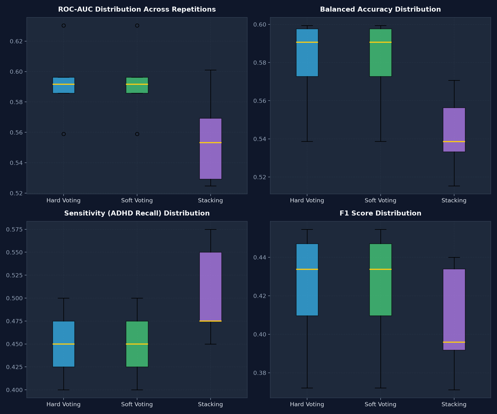

Run ID: run_20261004_183509_repeated_hybrid_01 | 5 Repeated 5-Fold Stratified CV Splits (Seeds: 42, 43, 44, 45, 46)
Development Cohort: 133 Subjects (7 Sites)
Test Cohort: 20 Subjects (Peking_2)
| Hybrid Model | ROC-AUC (Mean ± Std) [Min - Max] | PR-AUC (Mean ± Std) | Balanced Acc (Mean ± Std) | Sensitivity (ADHD Recall) | Specificity | F1 Score |
|---|---|---|---|---|---|---|
| Soft Voting (0.6 RF / 0.4 XGB) | 0.5926 ± 0.0229 [0.5589 - 0.6304] | 0.3682 ± 0.0178 | 0.5798 ± 0.0226 | 0.4500 ± 0.0354 | 0.7097 ± 0.0192 | 0.4234 ± 0.0299 |
| Hard Voting (RF + XGBoost) | 0.5926 ± 0.0229 [0.5589 - 0.6304] | 0.3682 ± 0.0178 | 0.5798 ± 0.0226 | 0.4500 ± 0.0354 | 0.7097 ± 0.0192 | 0.4234 ± 0.0299 |
| Stacking (Balanced LogReg Meta) | 0.5555 ± 0.0280 [0.5247 - 0.6011] | 0.3381 ± 0.0177 | 0.5428 ± 0.0191 | 0.5050 ± 0.0485 | 0.5806 ± 0.0226 | 0.4065 ± 0.0263 |

| Repetition | Seed | Hybrid Model | ROC-AUC | PR-AUC | Accuracy | Balanced Acc | Sensitivity | Specificity | F1 Score | TP / TN / FP / FN |
|---|---|---|---|---|---|---|---|---|---|---|
| Rep 1 | 42 | Soft Voting | 0.5962 | 0.3605 | 0.6466 | 0.5977 | 0.4750 | 0.7204 | 0.4471 | 19 / 67 / 26 / 21 |
| Rep 1 | 42 | Stacking | 0.5247 | 0.3176 | 0.5414 | 0.5153 | 0.4500 | 0.5806 | 0.3711 | 18 / 54 / 39 / 22 |
| Rep 2 | 43 | Soft Voting | 0.5917 | 0.3735 | 0.6391 | 0.5995 | 0.5000 | 0.6989 | 0.4545 | 20 / 65 / 28 / 20 |
| Rep 2 | 43 | Stacking | 0.6011 | 0.3670 | 0.5489 | 0.5563 | 0.5750 | 0.5376 | 0.4340 | 23 / 50 / 43 / 17 |
| Rep 3 | 44 | Soft Voting | 0.5858 | 0.3644 | 0.5940 | 0.5387 | 0.4000 | 0.6774 | 0.3721 | 16 / 63 / 30 / 24 |
| Rep 3 | 44 | Stacking | 0.5293 | 0.3204 | 0.5639 | 0.5386 | 0.4750 | 0.6022 | 0.3958 | 19 / 56 / 37 / 21 |
| Rep 4 | 45 | Soft Voting | 0.5589 | 0.3504 | 0.6316 | 0.5727 | 0.4250 | 0.7204 | 0.4096 | 17 / 67 / 26 / 23 |
| Rep 4 | 45 | Stacking | 0.5694 | 0.3444 | 0.5789 | 0.5707 | 0.5500 | 0.5914 | 0.4400 | 22 / 55 / 38 / 18 |
| Rep 5 | 46 | Soft Voting | 0.6304 | 0.3923 | 0.6466 | 0.5906 | 0.4500 | 0.7312 | 0.4337 | 18 / 68 / 25 / 22 |
| Rep 5 | 46 | Stacking | 0.5532 | 0.3410 | 0.5564 | 0.5332 | 0.4750 | 0.5914 | 0.3918 | 19 / 55 / 38 / 21 |
| Architecture | ROC-AUC | Balanced Accuracy | Sensitivity | F1 Score | Assessment |
|---|---|---|---|---|---|
| Balanced Random Forest (Historical Ref) | 0.7000 | 0.6833 | 0.7000 | 0.7000 | Reference Baseline |
| Best Hybrid (Soft Voting Mean) | 0.5926 ± 0.0229 | 0.5798 ± 0.0226 | 0.4500 ± 0.0354 | 0.4234 ± 0.0299 | -0.1074 ROC-AUC vs Ref |
Across 5 independent cross-validation repetitions with changing fold assignments, none of the hybrid architectures (Soft Voting, Hard Voting, or Stacking) demonstrate improvement over the selected single Balanced Random Forest reference. The single-model Balanced Random Forest remains superior and more parsimonious for downstream deployment.